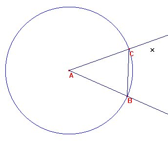
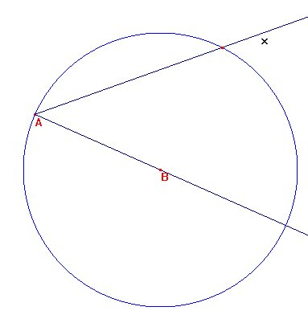
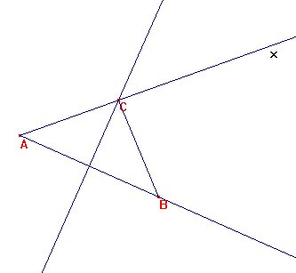

| Para cada una de las figuras, construye un punto C en la semirrecta [Ax, de manera que el triángulo ABC sea isósceles |
Sandro Gomes, A. (1.999): Developpement
conceptuel consecutif a l'activite instrumentee.
These pour obtenir le grade de docteur de l'université Paris
V en Sciences de L'Education.
Directeur de Thése: Gerard Vergnaud. (pag 102)
Los tres puntos que cumplen esa condición son:
1. La intersección de la circunferencia centrada en A y de radio AB con
la semirrecta Ax

2. La intersección de la circunferencia centrada en B y de radio AB con
la semirrecta Ax

3. La intersección de la mediatriz del segmento AB con la semirrecta Ax

Profesor Antonio Frias, Didáctica de las Matemáticas.
Universidad de Almería (España)